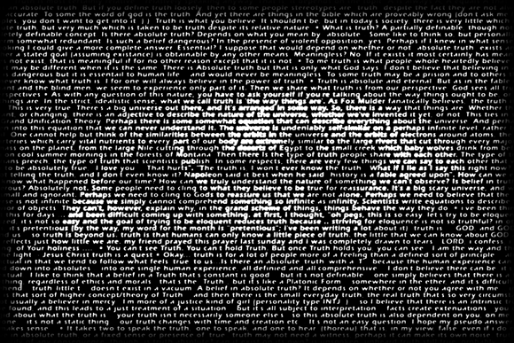

look close, examine the details, read the words. they're the hearts and minds and souls of those who make the net their home. then step back and see the image they form. how do we perceive truth, or determine it? our concept of truth is the lens through which we view the world around us. our vision.
[back]